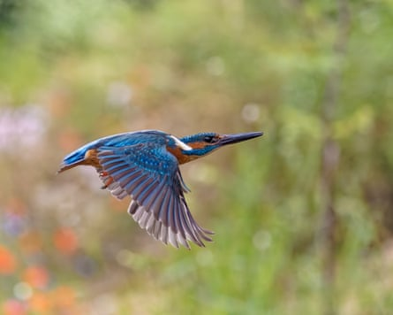
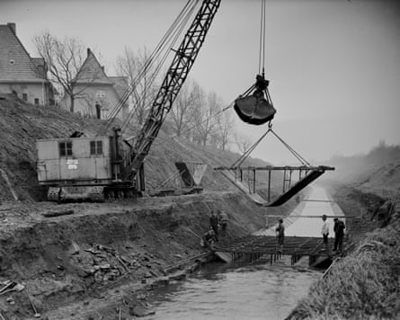
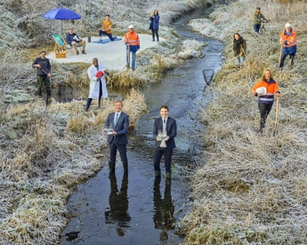
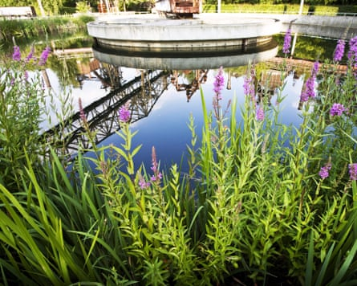
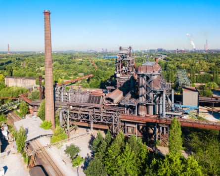
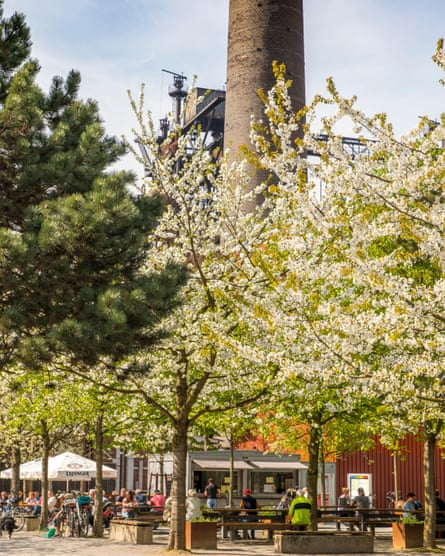

Strolling beside the Emscher, the Tyczkowskis say it is the stench that they remember most about the river’s darker days.
“The whole thing was filthy and it stank terribly,” says the couple, a retired watchmaker and tax adviser in their 80s. Were they ever tempted to take a dip? “No,” they laugh in disgust. “There were other things swimming inside.”
For more than a century, putrid fumes emanated from the “sewer of the Ruhr”, creating a pungent whiff that assaulted towns throughout Germany’s industrial heartland. But today, the Emscher bears little resemblance to Europe’s dirtiest river. Waters that used to be fouled by factory waste and human excrement have been free from effluent since 2021. The river system, the main part of which was once considered biologically dead, is witnessing an abundance of life return.
Nature enthusiasts have spotted kingfishers and demoiselles in the region, along with freshwater shrimp and even beavers.Photograph: Andyworks/Getty Images/iStockphoto
Nature enthusiasts have spotted lapwings, kingfishers and demoiselles in the region, along with freshwater shrimp, caddis flies, and even beavers. In May, scientists reported that red-finned rudds from the Rhine had reestablished themselves.
“Overall, it is really a success story,” says Prof Daniel Hering, an aquatic ecologist at the University of Duisburg and expert on the river’s ecology. “In former times, it was a sewer. Now, it is a river.”
The Emscher runs through the heart of Germany’s densely populated Ruhr region, a rusty mess of cities that sprung up around coal mines and factories as the Industrial Revolution kicked off. In the 1800s, the rapidly growing population was plagued by waterborne diseases such as typhoid and cholera, which killed workers and stalled the economic boom.
Alarmed by the hit to their profits, the Ruhr industrial barons sought to improve public health. They founded the Emschergenossenschaft, the first water management association in the country, together with local authorities. But its engineers were unable to build sewage canals underground – the result of coal mines that were making the land subside in unpredictable ways – and so they decided to dump the waste into the meandering Emscher, which they straightened and lined with concrete.
A historical image shows concrete casing being installed to increase the flow rate of wastewater.Photograph: EGLV
It was not until the coal mining industry collapsed in the 1980s, stopping the subsidence, that politicians began to think about bringing the river back to life.
“My predecessors, who were engineers, at first asked: ‘Why? It all works fine,’” says Uli Paetzel, the chair of the board of Emschergenossenschaft and fellow water management association Lippenverband. “But there was also an increase in environmental awareness after the Chernobyl crisis and the die-off of seals in the North Sea, which really troubled the German population.”
The Emschergenossenschaft set about cleaning up a river that served as a toilet for more than 2.5 million people. It built a central 51km (32-mile) sewage highway with an internal diameter of 2.8 metres (9.2ft) – “you could drive through it with a car, that’s how big it is,” says Paetzel – along with numerous pumping stations, four treatment plants and 436km of sewage channels.
Uli Paetzel, front right, holds fish found in the river in December 2021. The biggest hurdle of the €5.5bn project was technical, he says.Photograph: Henning Maier-Jantzen/EGLV
The €5.5bn (£4.7bn) project was mainly financed by the fees from industries and local communities, with about 20% coming from the EU and the state of North Rhine-Westphalia. Supported by low-interest loans from public banks and backed by local residents who were desperate to get rid of the summer stink, the mammoth restoration project went ahead with little difficulty. The project did not receive any legal challenges – a rarity in Germany, says Paetzel.
“The biggest hurdle was technical,” he says. “Putting underground canals into a densely built-up region – with motorways, dense urban development, industrial facilities – and getting the land to do so, that was the biggest challenge.”
But today, the Emscher is home to flourishing nature and provides a vibrant blue-green space for local residents and tourists in a rust belt region that has long struggled with poverty and unemployment. More than 130km of cycle paths run along its banks.
North Duisburg landscape park in Germany.Photograph: Zoonar GmbH/Alamy
The water is so clear that “sometimes, from the bridge, you can even see down to the riverbed”, says Volker, a retired lawyer, as he and his wife take a break from their bike ride to admire the view. “We both find it so nice that it was restored.”
Few rivers in Europe have seen a transformation as drastic as the Emscher’s, but many of the continent’s rivers and lakes are in desperate need of care. A report from the European Environment Agency in October found only 37% of surface-water bodies have a “good” or “high” ecological status, while just 29% have a good chemical status – figures that “hardly changed” between 2015 and 2021.
Enthusiasm for river restoration projects has grown as governments have come under increasing pressure to protect nature and ideas such as “rewilding” have entered the mainstream. The EU has committed to restoring 25,000km of river to a free-flowing state by 2030.
Landschaftspark in Duisburg, Germany, which has turned the Ruhr’s industrial heritage into a public park.Photograph: Andrey Khrobostov/Alamy
In the case of the Emscher, however, the extreme levels of soil settlement in the region mean the river has not been returned to its historical route.
“Restoring the Emscher to its former state is a task that cannot be done,” says Monika Raschke, a water expert at the non-profit German Federation for the Environment and Nature Conservation (Bund) – though the cleanup has brought back plants, insects, fish and birds. “It’s not the absolute ecological highlight that we might have elsewhere, but of course it’s a huge improvement.”
Hering says the river still has a way to go. Smaller streams are home to vibrant life – the tributaries were never as degraded as the main waterway was – but the Emscher itself may need another decade before stable communities are established.
Local residents and tourists now have vibrant green spaces in a rust belt region that has long struggled with poverty and unemployment.Photograph: Jochen Tack/Alamy
“With the tributaries, we have a pretty good idea of how reestablishment happens,” he says. “With the main River Emscher, which has been sewage-free for three years, we are only at the beginning of this process.”
Still, Hering adds, there are already lessons that can be learned from the project’s success: that nature can recover, even when starting from scratch; that large projects can be successful if they are embedded into society; and that wildlife needs several years before stable communities can be reestablished.
“It takes time,” he says. “But immediately after restoration, of course, you’ll see the first signs of success.”